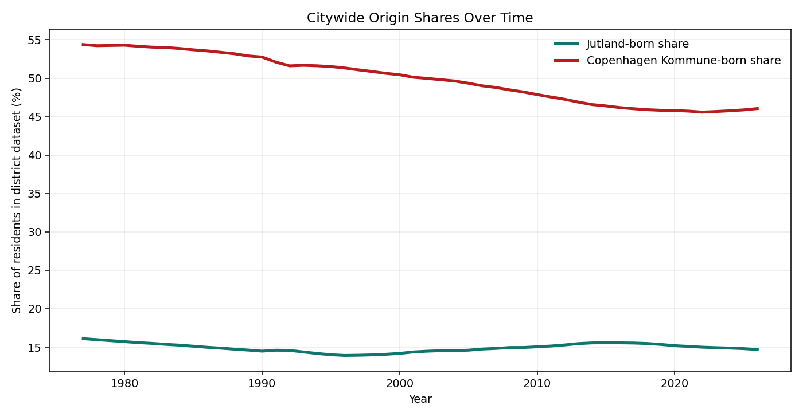
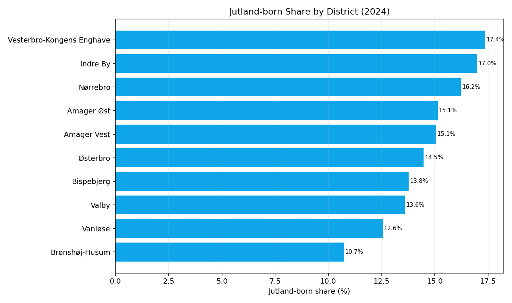
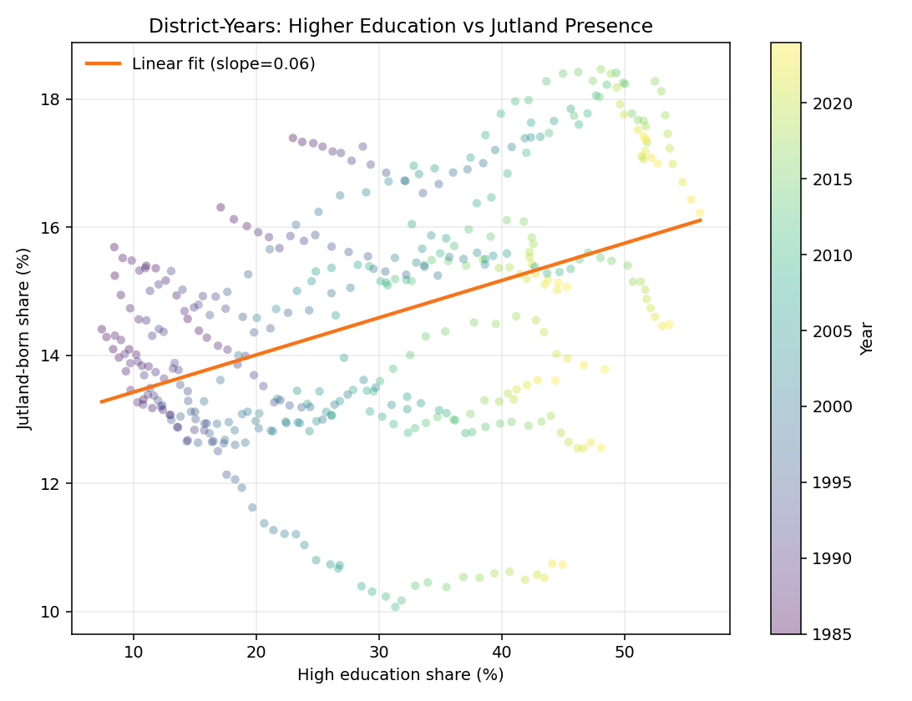
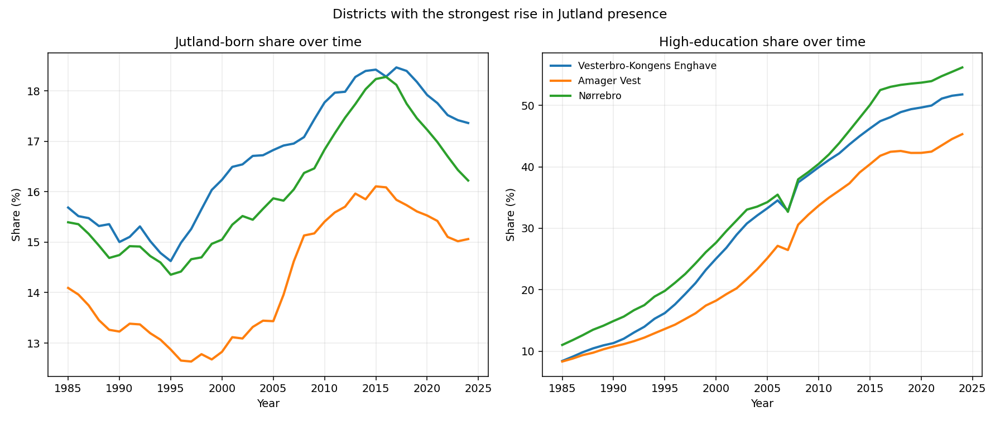

Residents by Origin (KKBEF9)
50 years (1977-2026), 12 birth regions, 10 main districts (+ outside category).
After cleaning and aggregation: 265 base rows used to build district-year origin shares.
Social Data Analysis and Visualization · Final Project B
Copenhagen and Jutland are often framed as a cultural rivalry, but migration data lets us ask a more useful question: are people from Jutland and people born in Copenhagen sorting into different districts, and how does that connect to district education profiles?
We combine two Copenhagen municipality datasets.
50 years (1977-2026), 12 birth regions, 10 main districts (+ outside category).
After cleaning and aggregation: 265 base rows used to build district-year origin shares.
40 years (1985-2024), age/sex/education dimensions, district-level plus finer sub-areas.
Filtered to district + age total + sex total: 2,400 rows.
District-year merge for shared years and districts.
400 district-year points used in correlation and trend analysis.
Definitions used in this story: Jutland-born = Nordjylland + Vestjylland + Østjylland + Sydjylland. Locals = born in Københavns Kommune.
The map below (interactive) shows how Jutland-born residents distribute across Copenhagen districts. Use zoom and hover to inspect district-level values.
The interactive line chart shows absolute Jutland-born counts over time by district. We see a dip through the 1990s and a renewed rise in the 2000s in several core districts.




Interpretation: the data supports the idea that Jutland migration is more concentrated in increasingly high-education districts, especially in central and recently transformed areas.
The KKUDD2 export used here only includes the ancestry category Danish origin. This means we cannot directly estimate education levels of Jutland-born individuals versus Copenhagen-born individuals at person level.
So our strongest claim is about district-level association: districts with higher education shares also tend to have higher Jutland presence. That is not the same as proving individual-level causality.
Behind-the-scenes analysis, preprocessing, and methodology are documented in the explainer notebook and derived panel data.